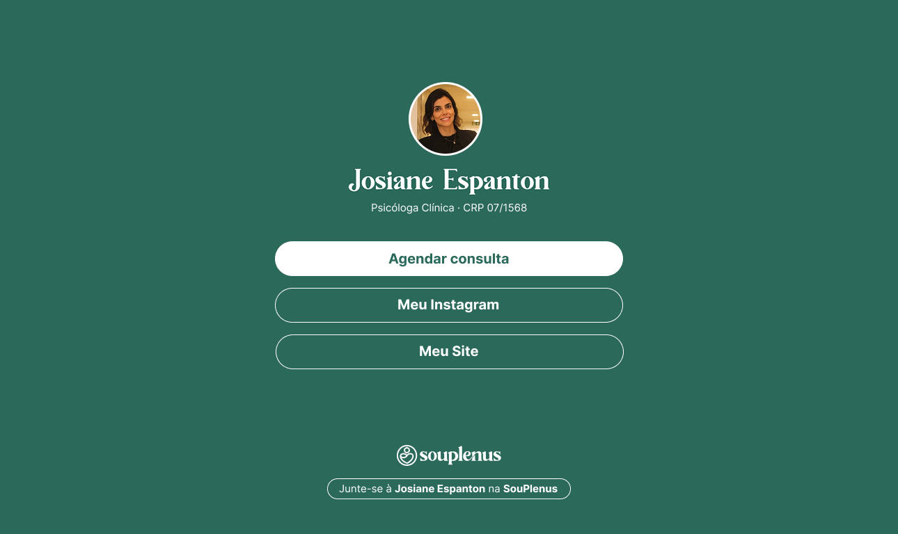

Como minhas habilidades técnicas podem ser úteis à SouPlenus.
Atendimento comercial, comunicação e vendas
Experiência prática na área comercial, comunicação estratégica e vendas. Possuo habilidades de automatização e triagem de leads via Whatsapp, auxiliando em um atendimento ágil e humanizado.
Marketing, prospecção e follow-up de leads
Possuo experiência na implantação e operação de funis de prospecção e vendas, integrando estratégias automatizadas para a captação e follow-up de leads em diferentes canais de comunicação.
Produção de materiais criativos
Como criador de conteúdo, sou capaz de roteirizar, produzir, filmar e editar materiais criativos em imagem e vídeo, além de atuar diretamente, com boa capacidade de comunicação diante das câmeras.
Soluções tecnológicas
Linktree personalizado souplen.us, sites profissionais integrado à plataforma, páginas de vendas para campanhas de marketing digital e outras soluções apresentadas à seguir.
Algumas ideias para agregar valor para a SouPlenus e os profissionais parceiros.
Linktree souplen.us
Permitir que os profissionais parceiros gerem um linktree personalizado (souplen.us/josiane) para inserir outros materiais em sua bio do Instagram, além do link do perfil de agendamento.

Domínio souplen.us
Por meio do domínio souplen.us os profissionais credenciados podem inserir outros links, sem perder o canal de agendamento via plataforma.
Fortalecimento da marca
Ao incentivar o uso do Linktree souplen.us nos perfis do Instagram é possível fortalecer e divulgar a marca de forma orgânica e escalável.
Divulgação indireta
Novos profissionais da saúde interessados podem chegar até a SouPlenus por meio da divulgação indireta 'Junte-se à Josiane Espanton na SouPlenus'.
Site profissional
Oferecer aos profissionais parceiros seu próprio site profissional integrado ao sistema SouPlenus, gerando mais credibilidade, visibilidade e autonomia.

Posicionamento personalizado
Proporciona aos profissionais parceiros uma presença online exclusiva, elevando o nível de credibilidade e confiança para além da página do perfil.
Expansão das soluções oferecidas
Posiciona a SouPlenus como uma parceira estratégica de carreira oferecendo uma estrutura tecnológica completa que vai além as soluções oferecidas atualmente.
Novos canais de captação
Cada site individual funciona como um novo canal de comunicação orgânico que direciona o tráfego de volta para a estrutura de agendamentos da SouPlenus.
Páginas de vendas
Criar páginas de vendas para a SouPlenus e profissionais parceiros, com o objetivo de automatizar a venda e a captura de leads em supervisões, mentorias, eventos e infoprodutos.

Campanhas estratégicas
Por meio de páginas focadas em conversão, é possível executar campanhas específicas mais robustas para atender as necessidades pontuais da empresa e parceiros.
Automação do funil de vendas
Jornada de compra automatizada, reduzindo o trabalho manual para que o interessado conheça e compre o serviço de forma independente e escalável.
Aumento do engajamento
Cria uma base de contatos própria para comunicação direta e recorrente para oferecer novos serviços, aumentando a fidelização e o faturamento por cliente.
Outras soluções
Campanhas de tráfego pago
Gerenciamento de campanhas em Google Ads para iniciativas internas da empresa e para a divulgação dos sites dos profissionais parceiros, criando um novo canal de comunicação e vendas.
Produção de conteúdo
Criação de postagens para as redes sociais com conteúdos informativos validados e alinhados com o código de ética do CRP para os profissionais parceiros da SouPlenus.
Implementação das estratégias da mentoria
Implementar as estratégias de posicionamento profissional trabalhados durante a Mentoria Profissionais de Alto Nível, por meio de soluções de desenvolvimento, marketing e design.